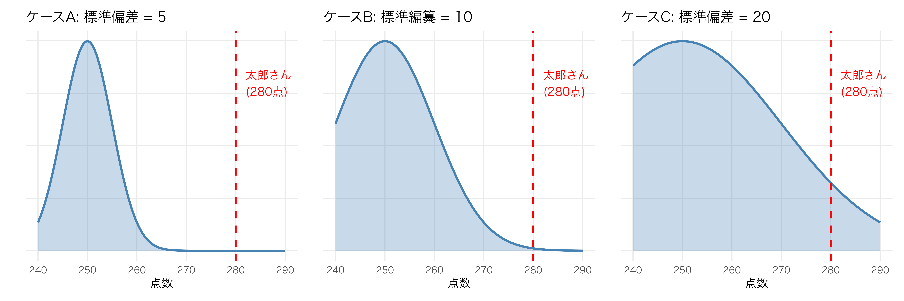
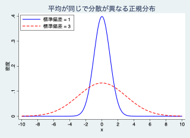
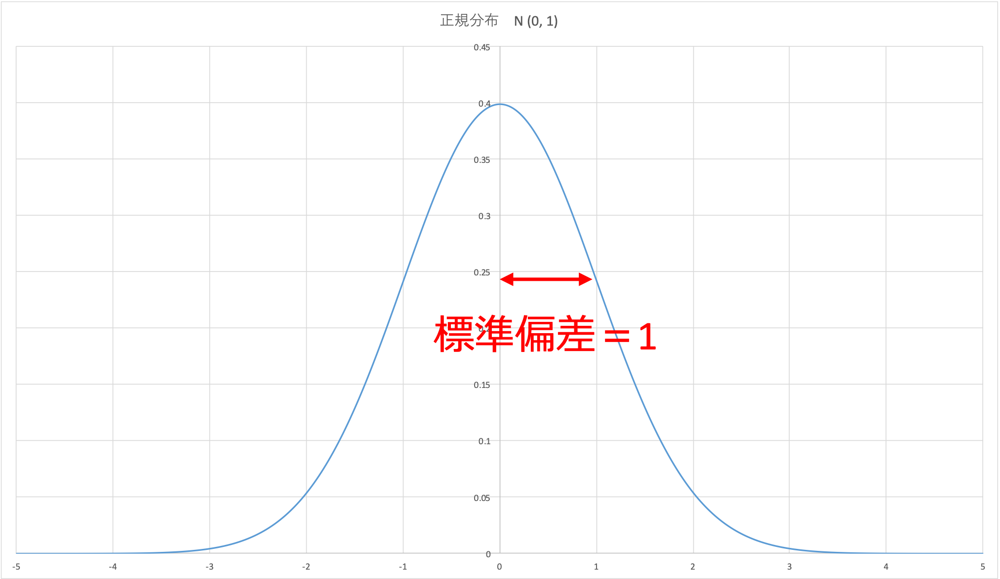
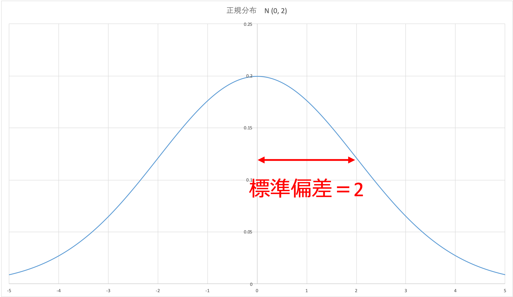
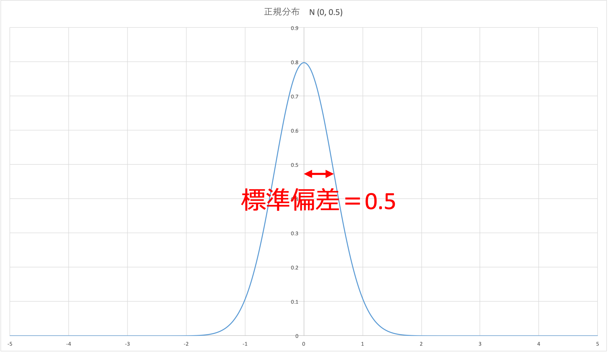
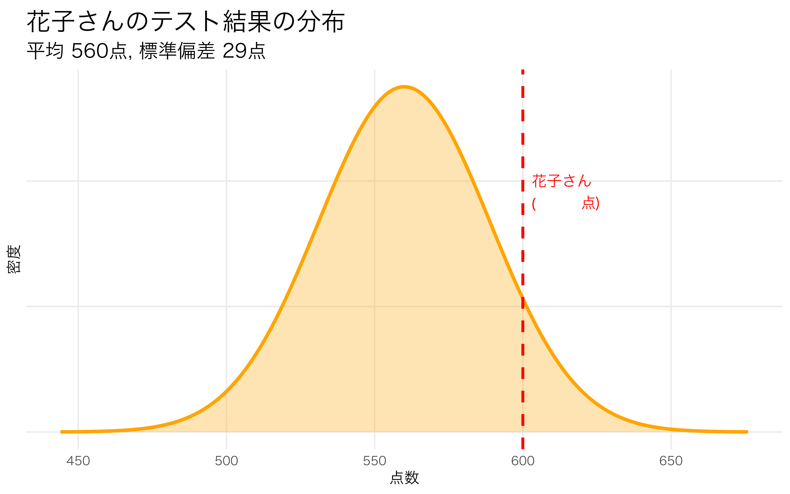
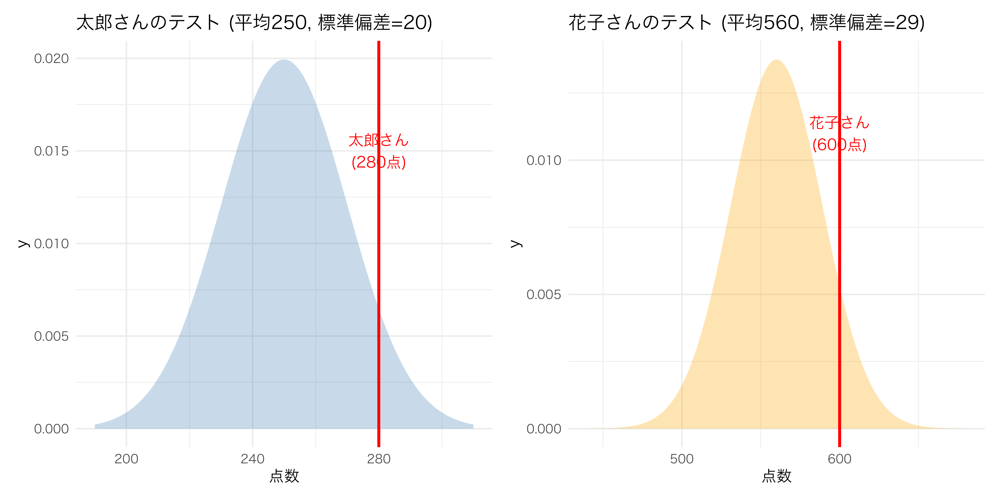
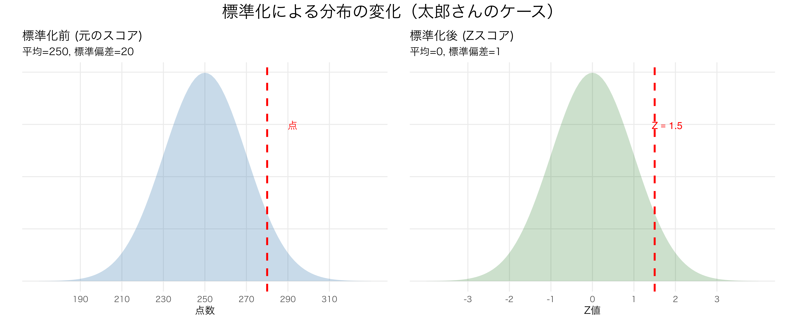

3 データのばらつき
3.1 データのばらつきの指標
平均点が同じであっても、データが平均の周りに密集している場合と、広く散らばっている場合では、そのデータの持つ意味が異なります。データの散らばり具合を数値化する「分散」「標準偏差」、そして異なる尺度を比較するための「偏差値」について学びます。

偏差 (Deviation)
個々の観測値 \(x_i\) が平均値 \(\bar{x}\) からどれだけ離れているか、平均との差を示す値です。
\[\text{偏差} = x_i - \bar{x}\] この偏差の平均を比べて評価すれば良いように思われますが、合計が0となり、うまく行きません。
\[ \begin{aligned} &\frac{1}{n} \{ (x_1 - \bar{x}) + (x_2 - \bar{x}) + \cdots + (x_n - \bar{x}) \} \\[15pt] &= \frac{1}{n} \{ (x_1 + x_2 + \cdots + x_n) - n\bar{x} \} \\[15pt] &= \frac{x_1 + x_2 + \cdots + x_n}{n} - \bar{x} \\[15pt] &= \bar{x} - \bar{x} \\[15pt] &= 0 \end{aligned} \]
分散 (Variance)
偏差をそのまま合計すると \(0\) になってしまうため、偏差を2乗し、合計しても0にならないようにします。
\[(x_1 - \bar{x})^2 , (x_2 - \bar{x})^2 , \cdots , (x_n - \bar{x})^2\]
この２乗したものの平均をとります。
\[ s_x^2 = \frac{1}{n} \{ (x_1 - \bar{x})^2 + (x_2 - \bar{x})^2 + \cdots + (x_n - \bar{x})^2 \} \]
\[s_x^2 = \frac{1}{n} \sum_{i=1}^{n} (x_i - \bar{x})^2\]
この \(s_x^2\) のことを「標本分散」（平方和）と呼びます。
Note
標本から母集団を推測する場合など、文脈によっては \(n\) ではなく \(n-1\) で割る「不偏分散」を使用します。
ここで、分散の単位は元の単位の２乗なので、値の大きさの意味が分かり難いという問題があります。例えば、元の単位が「円」だとすると、分散の単位は\(円^2\)となり、解釈が難しくなります。
標準偏差 (Standard Deviation)
分散は単位が2乗になってしまうため、平方根をとって元の単位に戻したものです。合計が0になることもなく、単位も元の単位を同じになります。
\[s_x = \sqrt{\frac{1}{n} \sum_{i=1}^{n} (x_i - \bar{x})^2}\]
標準偏差による分布の形状変化
標準偏差の大きさが変わると、分布の裾野の広がり方が以下のように変化します。
分散は単位が違うのでグラフ上で具体的な長さをイメージするのは難しいです。
他方、標準偏差は単位が同じなので同じグラフ上でばらつきの幅をイメージすることができます。標準偏差の範囲を \(\sigma\) 範囲と呼びます。
- 標準偏差 = 1: 標準的な広がり

- 標準偏差 = 2: 横に広く、低い山になる

- 標準偏差 = 0.5: 中央に高く、鋭い山になる

正規分布とシグマ範囲
多くの自然・社会現象が従う「正規分布」では、標準偏差 \(\sigma\) を使ってデータの占有率を把握できます。
- 平均 \(\pm 1\sigma\) : 全体の約 68.3% が含まれる
- 平均 \(\pm 2\sigma\) : 全体の約 95.5% が含まれる
- 平均 \(\pm 3\sigma\) : 全体の約 99.7% が含まれる
3.2 4. 標準化 (Standardization)
単位や平均が異なるデータを比較するために、中心（平均）を 0、広がり（標準偏差）を 1 に揃える操作を「標準化」と呼びます。ここで得られる値を 標準化得点（Z スコア） と言います。
標準化の考え方を理解するために、以下の2人のケースを考えてみましょう。
太郎さん：平均点250点・500点満点のテストで280点を取りました。
花子さん：平均点560点・800点満点のテストで600点を取りました。
どちらの方が全体の中で優れた成績といえるでしょうか？
太郎さん
まずは、太郎さんの得点について考えましょう。
平均点が250点のテストで280点という情報だけでは、全体の中での位置付けがはっきりとは分かりません。
そこで、太郎さんが受けたテストの散らばりを表す指標である標準偏差を調べたら、標準偏差は20でした。つまり、上のグラフのケースCだと分かりました。
花子さん
次に花子さんの受けたテストについても標準偏差を調べたら29と分かりました。

2人の比較
太郎さんと花子さんのテストの結果を比べると以下のようになります。どちらの点数の方が良いか、はっきりとは分かりません。そこで標準化を行います。つまり、それぞれのテストについて、平均を0、標準偏差を1に変換します。

- 太郎さん
\[ \begin{aligned} z_{太郎} &= \frac{\text{得点} - \text{平均}}{\text{標準偏差}} \\[15pt] &= \frac{280 - 250}{20} \\[15pt] &= \frac{30}{20} \\[15pt] &= 1.5 \end{aligned} \]
- 花子さん
\[ \begin{aligned} z_{花子} &= \frac{\text{得点} - \text{平均}}{\text{標準偏差}} \\[15pt] &= \frac{600 - 560}{29} \\[15pt] &= \frac{40}{29} \\[15pt] &\approx 1.38 \end{aligned} \]
標準化した得点を比べると太郎さんの方が少しだけ良い得点であることが分かりました。
標準化の式
- 平均を \(0\) に揃える: 各値から平均値を引く
- 標準偏差を \(1\) に揃える: ステップ1の値を標準偏差で割る
\[Z = \frac{x_i - \bar{x}}{s}\]
イメージ
標準化とは、平均（真ん中）を0、標準偏差（広がり）を同じ尺度にすることです。

3.3 偏差値
Zスコアをさらに人間が直感的に理解しやすい数値（平均 50、標準偏差 10）に変換したものです。
\[\text{偏差値} = \left( \frac{x_i - \bar{x}}{s} \times 10 \right) + 50\]
これにより、平均的な学生は偏差値 50となり、偏差値 60は上位約 16%（1 標準偏差）となります。
標準偏差と偏差値の割合
偏差値は、正規分布の性質を利用して「全体の中でどの位置にいるか」をパーセンテージで示すことができます。
以下の表は、正規分布を仮定した際の標準偏差（Zスコア）と偏差値、および順位の対応目安です。
| 標準偏差 | 偏差値 | 上位からの割合 | 100人中での順位 |
|---|---|---|---|
| \(+3\) | 80 | 約 0.13% | 1,000人で1位 |
| \(+2\) | 70 | 約 2.3% | 2〜3位 |
| \(+1\) | 60 | 約 15.9% | 16位 |
| \(0\) | 50 | 50.0% | 50位 |
| \(-1\) | 40 | 約 84.1% | 84位 |
| \(-2\) | 30 | 約 97.7% | 97〜98位 |
| \(-3\) | 30 | 約 99.87% | 1,000人で999位 |